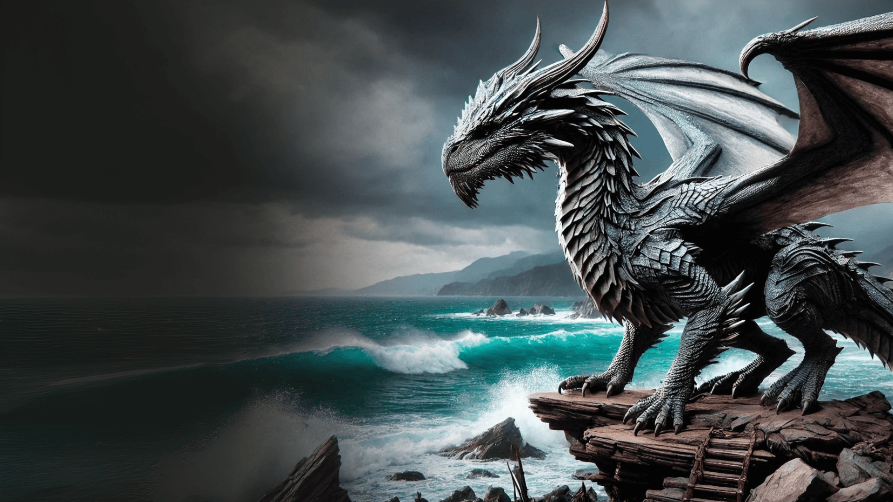
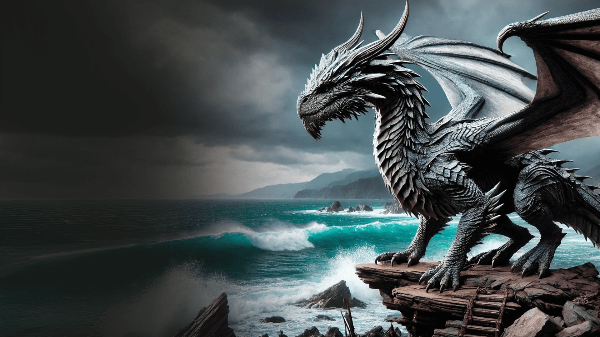

Maria Eduarda
Bloguerinha
Sylax
Syrax foi uma dragão-fêmea. Ela foi montada exclusivamente por Rhaenyra Targaryen. Seu nome veio de uma deusa de Valíria
Arrax
Arrax foi um dragão montado pelo Príncipe Lucerys Velaryon durante a Dança dos Dragões.
Caraxes
Caraxes, também chamado de Wyrm de Sangue e Verme Sangrento, foi o dragão montado pelo Príncipe Aemon Targaryen durante o reinado do Rei Jaehaerys I Targaryen e, mais tarde, pelo Príncipe Daemon Targaryen.
Seasmoke
Seasmoke era um dragão cinza-claro. Era grande o bastante para combate durante a dança, mas ainda um jovem dragão, e mais ágil no ar do que seus irmãos mais velhos.
Vermax
Vermax foi o dragão montado pelo príncipe Jacaerys Velaryon. Ele prosperava e crescia a cada ano. O dragão ficou mal-humorado quando próximo de neve, gelo e frio.A cor de Vermax não é descrita nos livros.
Vhagar
Vhagar foi uma dragão-fêmea montada por Visenya durante a Conquista, ao lado do Balerion de Aegon o Conquistador e o Meraxes de sua irmã Rhaenys.